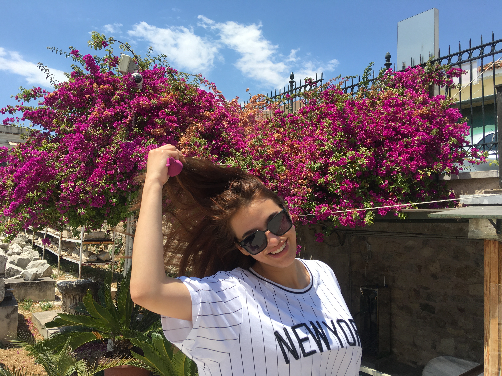

Hello there! My name is Paolina,i'm 19 years old and i'm from Bulgaria.I began my jorney since 15 year old by going to a school with an ICT program. There I learned the history of the computers, also learned how to work with Microsoft appliences like Excel and Word. Followed by the basics of HTML,CSS and C#. I've perticipated in a lot of school projects and events that you can check on the "Post feed". Since a teenager i was very interested in computers "How they work?", "How can i change it to be better?" ect., from there i wanted something different and from there the idea came up and then grew on me as a dream to become a web developer or web designer.I wanted to this dream to come true as i was doing this program and participating in all the projects, i even started to do online courses.Now continuing that dream am more ambitious than ever.
| You can find me on: | Instagram:@ganevaa.p | Facebook: Паолина Ганева | Linkedin: Paolina Ganeva |
|---|
ICT program fits perfectly with my excpectations. Continuing with the studies i can now learn all the knowladge for my fututyre job. The best thing about Hz and the program is that here are a lot of international students that means you could people from all over the world. Also here while learning you get the chance to practice and put this knowladge in projects, and i think that better because you learn the best. This program meets my excpectations by having also IT buissnes because rather than just making sites or programs you have to know how to sell your stuff. I came here to make my dream come true and so it will.